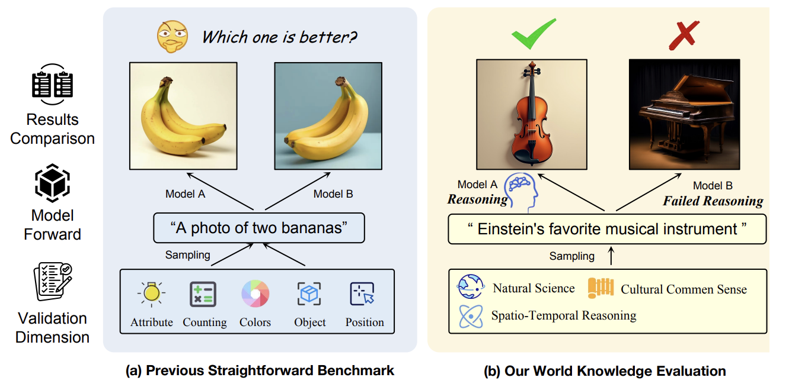
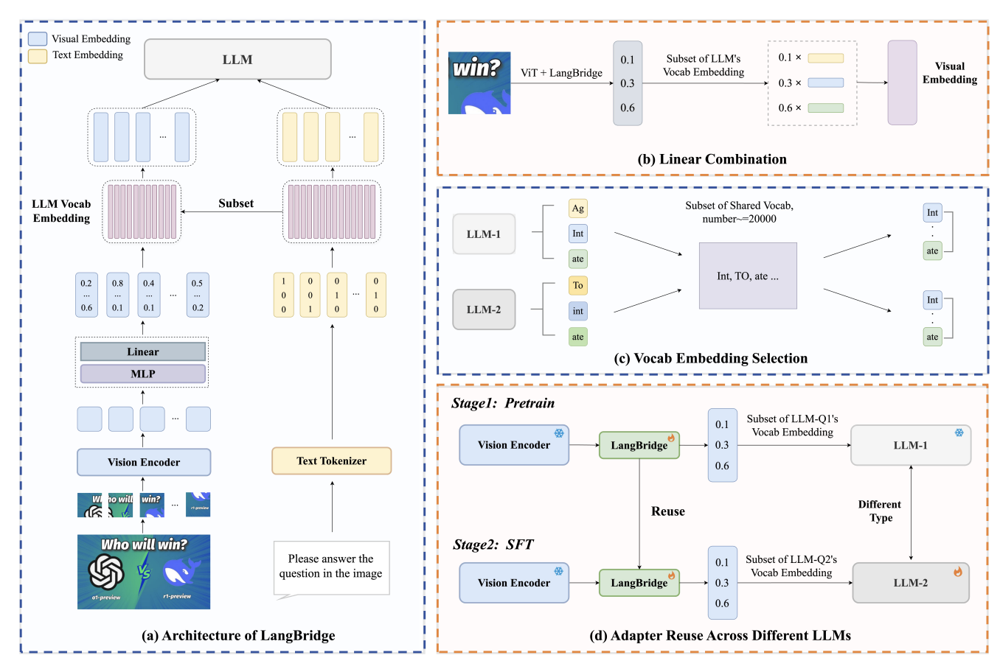
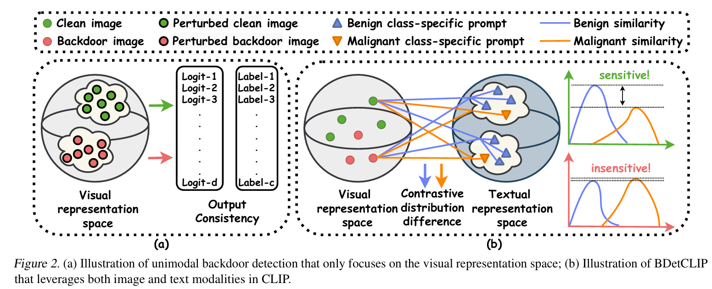
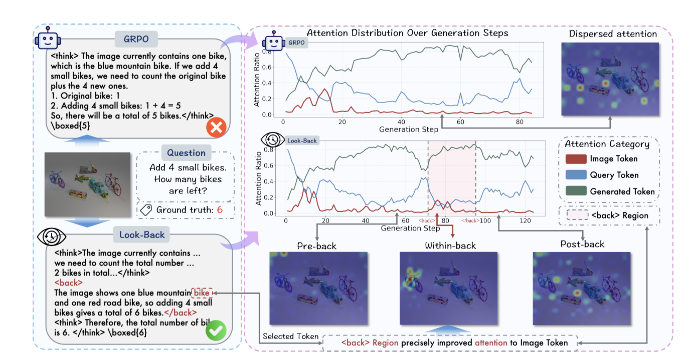
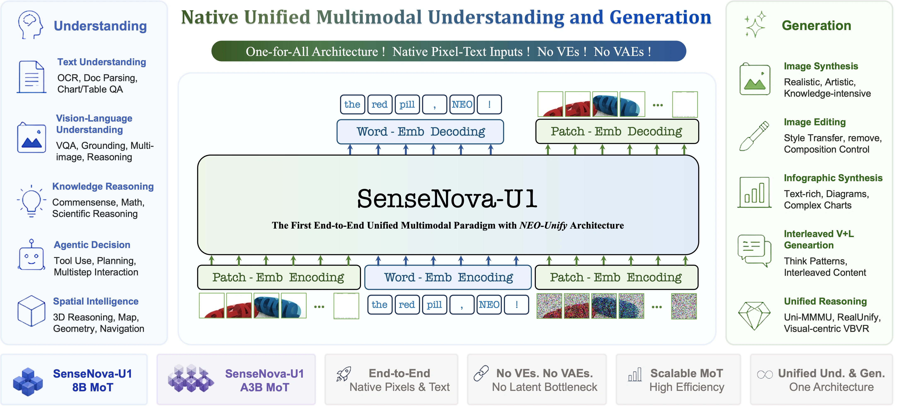
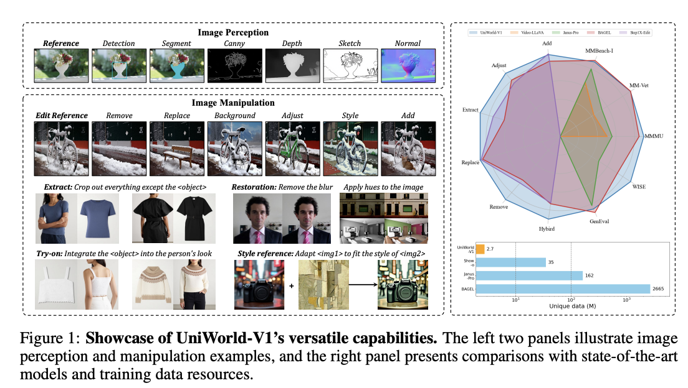
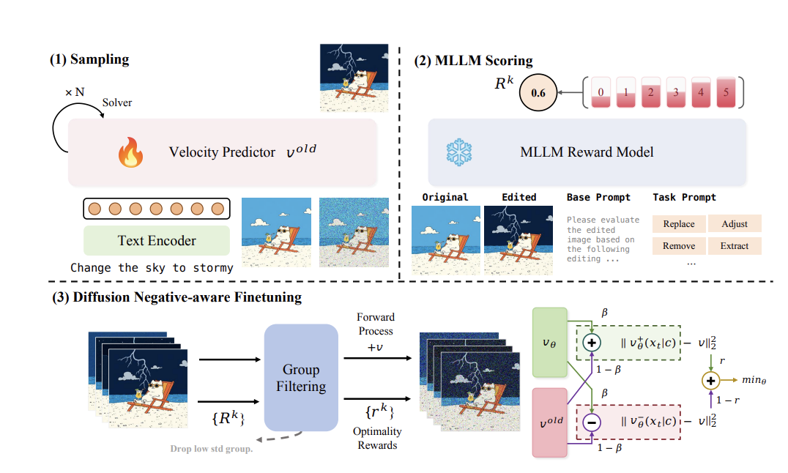
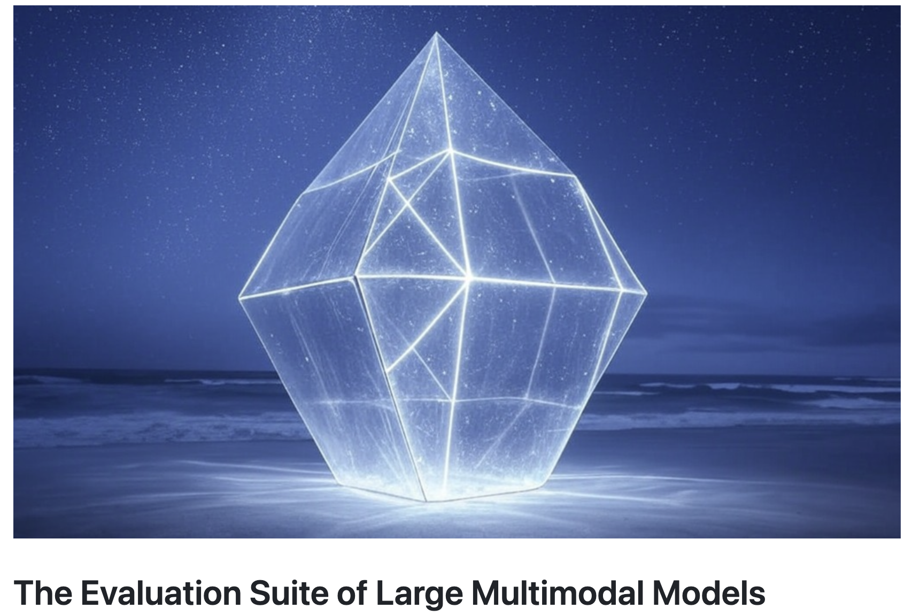
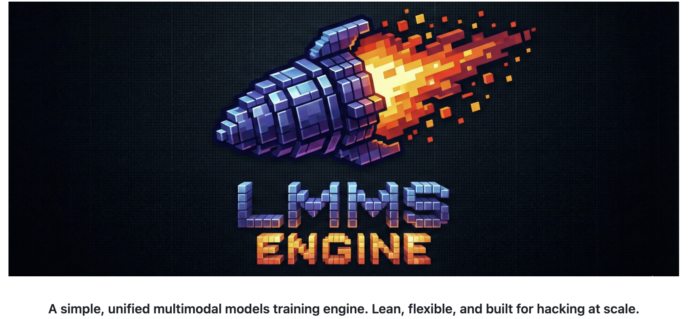

About Me
I am a fourth-year undergraduate student in the Hongshen Stand-Out Class of Computer Science at Chongqing University. I am fortunate to have closely collaborated with Prof. Lei Feng during my undergraduate studies and will be joining Peking University, advised by Prof. Li Yuan.
My core research focuses on visual representations and language priors. Vision directly depicts the physical appearance of the "real world"; while language, as the refinement and abstraction of visual information, constructs the knowledge landscape of the "human world." I firmly believe that bridging the gap between the language modality, which carries "human world" prior knowledge, and the visual modality, which directly reflects the "real world," is a crucial step towards achieving general artificial intelligence. This not only involves finding effective mapping paths between modalities but also concerns how to leverage their respective strengths to build a unified framework collaboratively.
Currently, I am dedicated to building native unified multimodal models.
🤝 I am eager to discuss potential collaborations and am actively seeking industry internship opportunities in multimodal models. Please feel free to contact me via email or WeChat: purshow if you are interested.
Education
- [2022-2026] B.Eng. in Computer Science, Hongshen Stand-Out Class, Chongqing University.
Experience
- [Mar 2026 - Now] Visiting Student/Research Intern, NTU LMMs-Lab.
- [Sep 2025 - Mar 2026] Research Intern, Bytedance Seed-Vision.
Publications
Selected Publications & Manuscripts 6
Full paper list can be found on Google Scholar. * Equal Contribution † Project Lead
-

-

-

-

-

-

Projects & Tech Report 5
-

SenseNova-U1: Unifying Multimodal Understanding and Generation with NEO-unify Architecture -

-

-

LMMs-Eval: Probing Intelligence in the Real World -

LMMS-Engine: A simple, unified multimodal models training engine. Lean, flexible, and built for hacking at scale.
Blog
I occasionally write blogs to share my thoughts. Chinese readers can find the full archive on my RedNote.
Personality
Beyond science, I am deeply passionate about literature, poetry, anime, films, music, and all forms of art that embody human creativity. I firmly believe these are the reasons for our existence. Currently, I am deeply captivated by the literature of Dostoevsky and Tolstoy, and R&B music (such as Prince, Stevie Wonder, D'Angelo, David Tao, and Khalil Fong).
Contact Me
I truly believe that great ideas and improvements come from open discussions and debates in academia. If you have any thoughts, disagreements with my work, or fresh ideas you’d like to share, I’d be really grateful to hear from you. I am incredibly fortunate to have met many friends who have helped me along the way, and in turn, I am always willing to chat and offer any assistance I can to others.
If you’ve got any questions about my research or if you’ve tried reaching out through GitHub issues and haven’t heard back, please don’t hesitate to drop me an email.
My preferred email: niuyuwei04@gmail.com